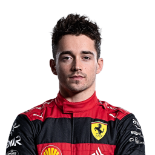

WINNER: Charles Leclerc
- 1st: Charles Leclerc
- 2nd: Max Verstappen (Fastest Lap)
- 3rd: Lewis Hamilton
- 4th: George Russell
- 5th: Esteban Ocon
- 6th: Mick Schumacher
- 7th: Lando Norris
- 8th: Kevin Magnussen
- 9th: Daniel Ricciardo
- 10th: Fernando Alonso
- 11th: Valtteri Bottas
- 12th: Alex Albon
- 13th: Lance Stroll
- 14th: Zhou Guanyu
- 15th: Pierre Gasly
- 16th: Yuki Tsunoda
- 17th: Sebastian Vettel
- NC: Carlos Sainz
- NC: Nicholas Latifi
- NC: Sergio Perez